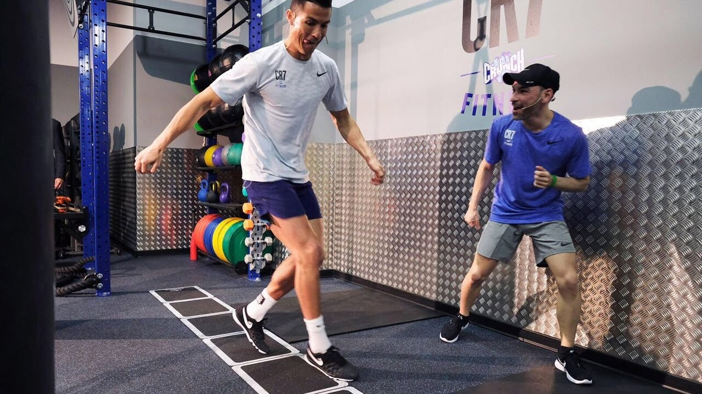

Good recovery is one of the key factors in in any sport. Pro footballers train a lot and they must do so to improve, but all the hard work stresses the body of the athlete. The body is the temple of the athlete and it needs to be treated the right way in order to be able to handle all of the hard work. This is where the word recovery comes to mind.
Take Cristiano Ronaldo as an example. He is an absolute machine. He trains a lot every day. But in order for him to do all this work, he needs to treat his body the right way. He is one of the most professional athletes that the world have ever seen, and he is therefore what you can call a master of recovery. He takes this important, but very underrated part of the game really seriously, and the result of this extra work is shown in his extraordinary performances.
A football season is long, and it contains of between 60 and 70 matches (all games included), and professional players train up to three times a day at most. This is a lot of work, and at times more than their body can handle. This is where the importance of proper recovery comes to mind. After a session the players usually jump into an ice ice-cold bath. It is shown that this helps the muscles to recover. It reduces welling and soreness, but in a three month study it was shown that the bath affected the result of the training progression in a negative way. The people that bathed after the session made smaller gain in musclemass.